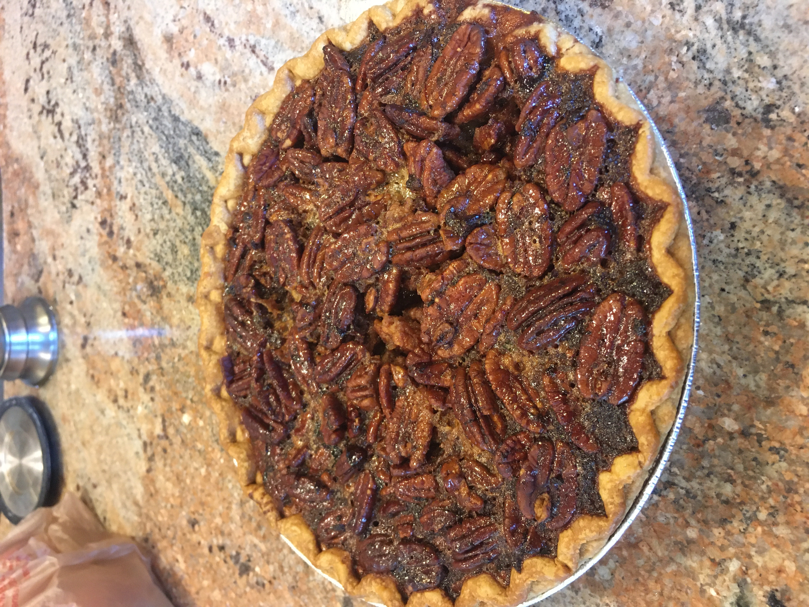

Pecan Pie
A wonderful treat sure to liven any post dinner eatings!
Ingredients
- Pie crust
- 3 eggs
- 1 cup of sugar
- 1/1 teaspoon of salt
- 1/3 cup of melted butter
- 1 cup of light corn syrup (can be subbed with honey)
- 1 or more cup of pecan halves
- 1 teaspoon of vanilla
Instructions
- Preheat oven to 375°
- Mix and beat all but the vanilla until well blended
- Fill the shell with pecans until deseried amount
- Fill shell with mixture
- Bake pie for 40 to 50 minutes or until inserted knife comes out clean
- Serve warm, cold, or with ice cream!
Chef's Advice: If you are not sure how much pecans to put in the pie crust you can instead stir in a cup pecans into the mix and then fill the mix into the pie crust.